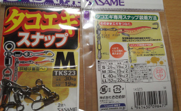
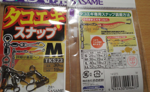
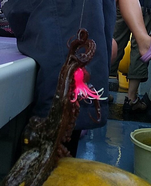
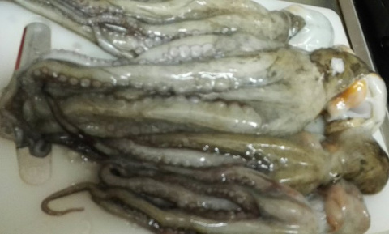
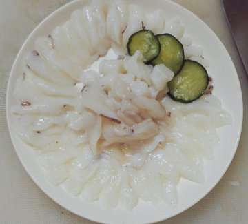
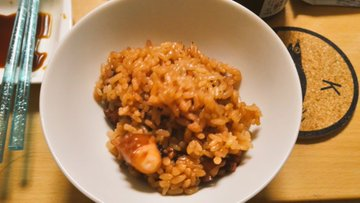
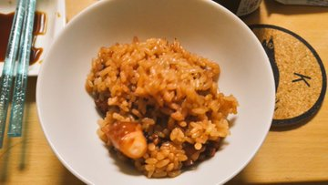

更新遅れましたが、8月4日に船でタコ釣りに行ってきたので様子などを書きます。
実は7月ごろから「今年はタコが湧いているかもしれない」という情報は得ていて気にはなっていて、おまけに近所の船宿もタコ船の出船を決めているという状況でした。で、ここに来てつりの師匠からお誘いがあり、渡りに船ということで行ってきました。
仕掛けなど
船でのタコの釣り方は昔ながらのタコテンヤで釣る方法と、タコエギで釣る方法があるのですが、初心者はとりあえずタコエギでやったほうがいいということだったので、タコエギのし掛けを準備。
ただし、タコの釣りは底辺りを狙う釣りで、根がかりが多くてタコエギがロストしやすいのでやすいので良いということだったので、300円くらいのエギを多数と、この辺りをチョイスしてみました。
蛸墨族
Amazonなどで探してたら、まんまタコの形をしたエギもHitしたので何個か投入。
タコゆらハンター
これは元々陸用らしく、こんなんで釣れるの？って感じですが、これが以外な結果に…
後は使ったスナップなどなど
 

後はもう使ってないイカ用の安エギも何本か用意。
これは、タコエギと同じスナップにイカ用エギもくっつけてアピール増やす作戦。
そして、ロッドとリールは船宿に借りる予定だったので、ショックリーダー10号フロロと重り30号を用意して当日を待ちました。
当日の様子
そして当日。今回の船宿は川崎にある「つり幸」さんでした。
毎回お世話になっている釣りの師匠と相方を含めて総勢8人で行くことに。このときタコ船は盛況で2日前くらいにはもう予約が埋まっている…という状況でした。
いつもの船と借りたロッド・リールはこんな感じ


ロッドはやや硬めでした。リールも強そうな感じです。
今回、船は4箇所くらいポイントを回るといった感じでした。扇島の周辺や川崎の堤防辺りなどを行ってた感じですね。
仲間内では自分が一番最初にファーストHITしたのですが、直前でバラすという事態…
タコエギには針にカエシがついていないので外れやすく、ポンピングしないように気をつけていたのですが、やっぱり取り込みが難しい。。。
他、みなさんも次々とHitしたりバラしたりと中々熱い展開。
そして、ボクもようやく釣り上げてこんな感じでした。

途中辺りが少なくなったので、Yamashitaの例のタコの形をした「タコゆらハンター」を試してみた所反応があり、こんな感じで何匹か釣れました。

この様子を相方が見ており興味を示したので貸した所、恐るべきスピードで鬼のように釣ってました。
タコゆらはこの形状と底に重りが付いていて、しっかり底が取れたのが勝因なのか、それともピンク色だったのが良かったのか謎ですが、さすがイカでも実績が有るYamashitaなのかなーと言った感じですね。
ただ、タコエギと違って全周囲に針がついてるので、根がかりがしやすいのがネックかもしれません。
その後も12〜13時かその辺りはあまり当たらないといった感じでした。干潮時間などを意識してませんでしたが、やっぱり潮の動きも関係あるかなと。。。
そういった時間帯は釣ったタコを締めたりしてました。タコはイカと同じで眉間に尖ったものを挿せば締められます。
ボクは今までイカで結構やってきたのでなれていたつもりでしたが、吸盤の強さがイカと全然違い、しかも締めても動く強さがあったので多少難儀しました。
床にくっついて離れにくい場合は水(海水)をまくと取れやすかったですね。。
そして、最後のポイントに周って少しアタリが出てきたのですが、14時になったので納竿しました。
釣果と料理
釣果は、自分が5匹、相方が6匹でした。
釣果の一部はこんな感じです。まぁまぁ良形が釣れたかなと

料理ですが、とりあえず釣ったもの全部は内臓を出しました。
内臓を出して使わない分は「ヌメリもそのまま」でZIPロックに入れてストローなどで空気を抜いて冷凍出来るということだったので、そのようにしました。
ヌメリそのままで、一旦冷凍しておくと一ヶ月くらいは持ってしかもヌメリが取りやすくなるそうで、後日に自然解凍も試してみた所本当にそんな感じでした。
そして取った内臓は胃とエラとスミ袋は使わなかったです。実は胃もエラも食べられるそうなのですが止めておきました。
イカと違ってスミ袋は肝臓にへばりついてるので取るのは難しいですが、薄皮をめくって取るような感じでした。
で、色々調理した結果はこんな感じです。

 

生タコの刺し身と、定番の茹でタコ刺し身、タコの酢の物、写真はないですが肝やら卵が入った道具汁、たこ飯という感じです。
生タコの刺し身は香りはそんなに感じなくて、ムニュっとした食感を楽しむみたいな感じでした。
茹でタコは、これぞタコといった感じでしたね。スーパーなどで売ってるタコとはやっぱり違って新鮮なマダコはこうも違うかーという感じで旨味も風味もあり良かったです。
同じような感じで酢の物も良い感じでした。お酒が合います。
肝などを入れた汁なのですが、同じ軟体類でもイカと違って、口に含んだときは「うーん？」って感じなのですが、後からドカンと旨味がやってくる系で不思議な感じでした。
イカはもう口に入れた瞬間で肝が全力でアピールしてくるわけですが、タコは後からやって来るというのが新鮮でしたね。
そして、どれもこれも美味しかったわけですが、極めて一押しなのがたこ飯です。
香り最高、味も良いといった感じで、炊きたてはタコが思った以上に柔らかく、気がついたらなくなるパターンでした。何度でもリピしたいところです。
ちなみにレシピは、よく見ているYoutuberの谷やんさんのこの超巨大水タコの動画のを参考にしています。
ボクも、酒：薄口しょうゆ：みりん：ザラメ＝5：3：1：1にしました。ザラメが無かったので砂糖です。
谷やんさんの言うとおりにごまとの相性も抜群ですね。ごま油を最後にまぶしても美味しかったです。
後日、蒸しタコってどうなんだろうと思って、市販の簡易蒸し器(広がるタイプのアレ)で5分ほど蒸してみたのですが、旨味がぎゅっと濃縮されてて美味しかったです。
人によって好みはありますが、ボクは茹でよりも蒸しかなーと。
蒸し器に入れて一分半くらいで色変わったので、もしかしたら三分くらいだったら更に良かったのかなあと…このへんは研究の余地があるかもしれません
まとめなど
ということでタコ釣りとタコ料理を堪能してきました。
タコはあれから時々料理に使っていますが、まだ冷蔵庫に残っているので冷凍焼けするまえに美味しく食べようかなと思ってます。
しかしタコは捨てる所があまりなくて歩留まり良すぎですね。おまけにヌメリ付いたまま保存しておくと冷凍保存してもさほど劣化しないのも素晴らしい…なんて良食材。
あと、タコ釣っていて気がついたことを書きます。
・ロッドとリールは強めが良いかも
自分でタックル用意する場合は、もうぶっちゃけジギングロッドでも問題ないと思いまいた。
これは、タコを釣り上げようとした時に抵抗して張り付いた時に引っぺがすのが重要かなと。余り弱いと折れてしまうので、、
あとは、、船の側面に張り付かれる前に一気に巻き上げられるリールもあれば完璧だなあと思いました。
・重りを沢山用意しておく
本当に気をつけていても結構根がかります。重りだけなくなるなんてこともザラでした。仲間内で重りがもう無いって人もいたので譲ったりしておりました。
30号とか結構重たくて、釣行時に荷物が重くなっちゃいますがしかたないですね。。
・誘い方の工夫
エギ一つより２つのほうがいい感じでした。
あと、タコエギでの釣り方って底を叩くように結構トントンするのですが、ゆらゆらさせていても釣れるパターンもあり…ということで色々攻め方大事だなと
とまあこんな感じでした。
アタリはのそっと抵抗があるような感じで、暴れたりはしないので、根がかりと変わらないので難しいところですね。
怪しかったら合わせる人も居れば、待ってから合わせる人も居て、そのあたり研究の余地がありそうでした。
ただ、大きめのタコに張り付かれてしまうと、本当に根と変わらなくなってしまうのでやっぱり鬼合わせがいいのかなーとも
夏本番が過ぎようとしていますが、８月一杯までは釣れるみたいなので機会あればぜひということで。